leverage software toolkit¶
- Author
Annie Wang
- Contact
- date
2019-09-14
contents
why need software toolkit?¶
blackboard vs software
compare items |
blackboard |
software |
|---|---|---|
space adjusted |
can’t |
can adjust automatically |
export ability |
can’t |
can export other file easily |
share |
not easy |
easy |
we can leverage the power of software to make the cause and effect analysis more effectively and more conveniently.
recommended software toolkit¶
xmind
it is a mind manager software. the fishbone diagram function is excellent.
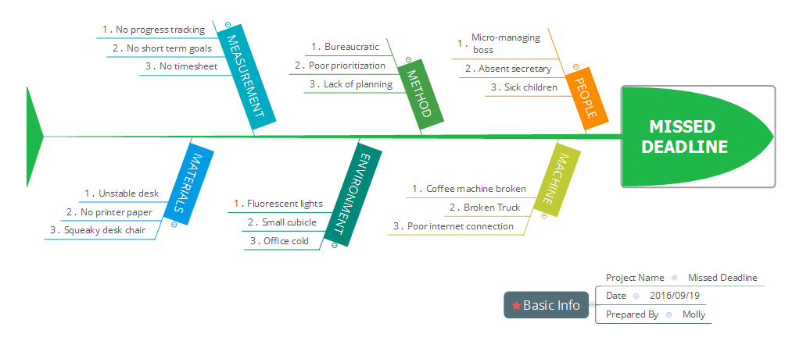
visual-paradigm
<https://www.visual-paradigm.com/>
this is a big software. you can find many of useful and exciting function. fishbone diagram is just a little and little function.
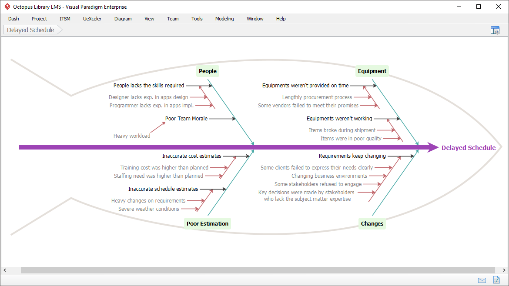
some useful marketing tool:
Strategic analysis tool
SWOT analysis
Value chain analysis
Competitor analysis
Root cause analysis
PEST analysis
Five Forces analysis
Four Corners analysis
toolkit intro: xmind¶
where to get?¶
here is download website
but fishbone diagram is disable with default, you need to pay for becoming professional version.
how to install?¶
install
activate it to become prefessinal version with full fucntion
help->license, input serial Number to activate.
how to use?¶
create new file bone.
file->new, to create a new map, select fishbone(right Headed),then will see following dialog window to choose a theme of fishbone diagram.
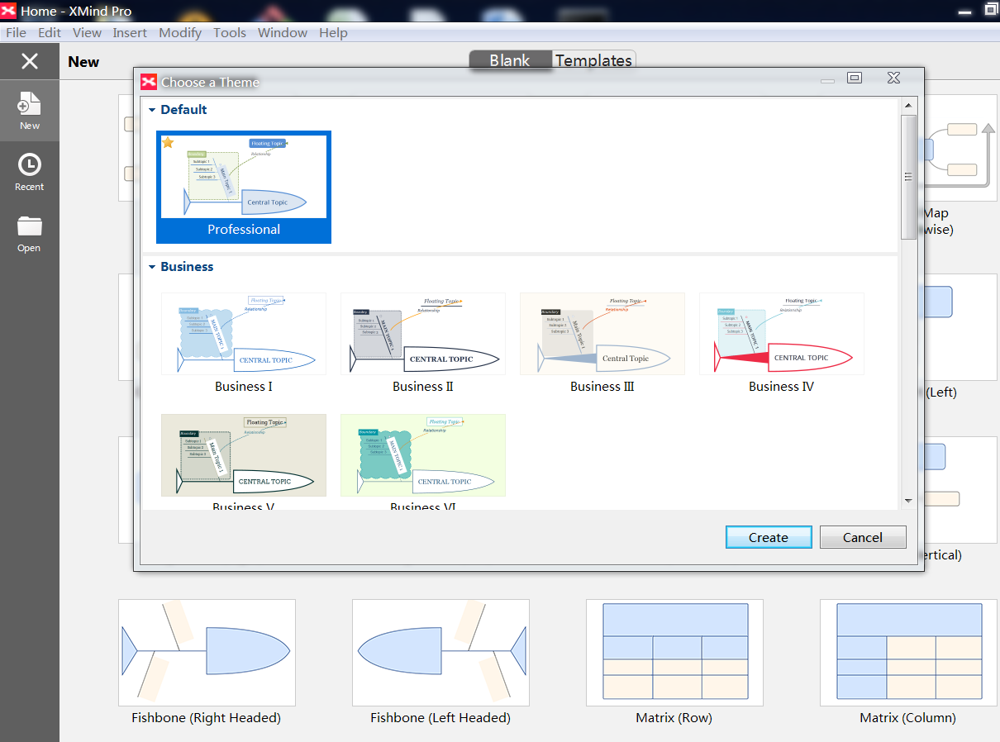
ok, then you will have one empty fishbone diagram just a empty head.
insert subbone on main bone mouse right click on head of fish, then will pop up context menu as following,
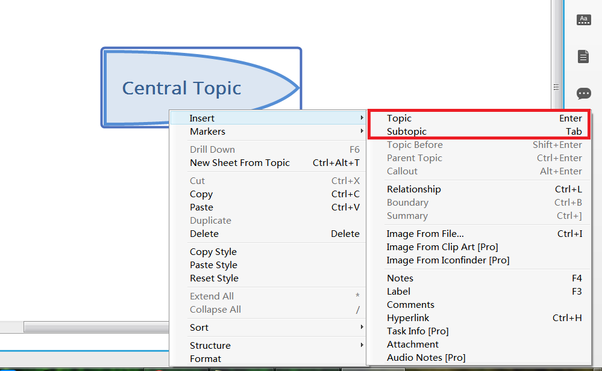
select as menu with a red rectangle. click and click, two subbone will be on main bone.
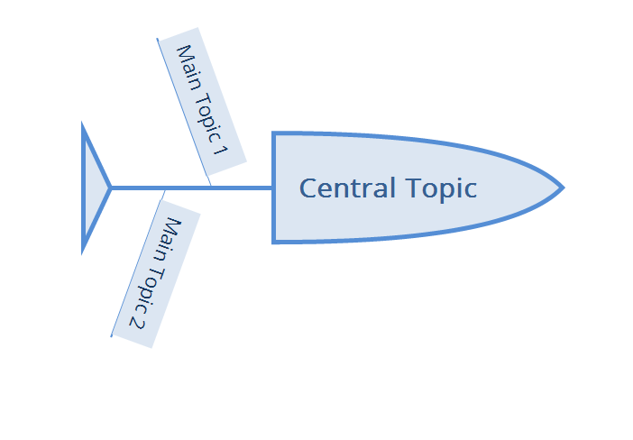
create sub-subone on subbone right mouse click on subbone, will pop context menu
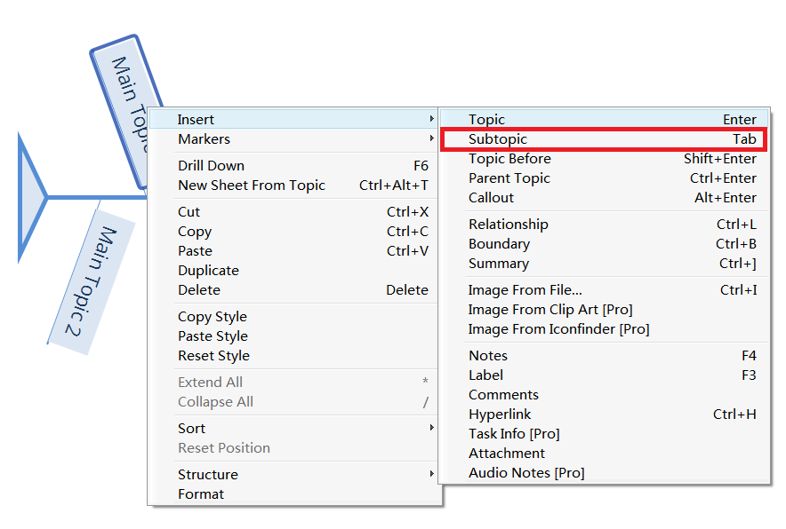
then select as menu with a red rectangle, will create sub-subone.
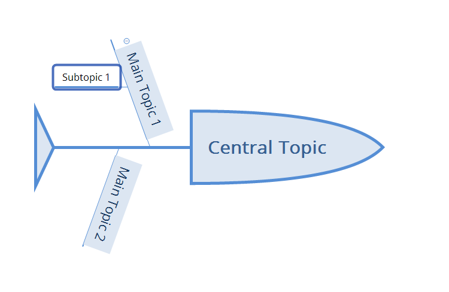
repeat and create more subsubbones
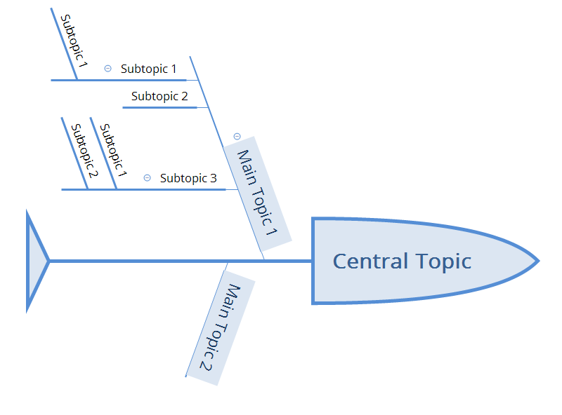
export the causes data to exel table. file->export pop up export diaglogue windown.
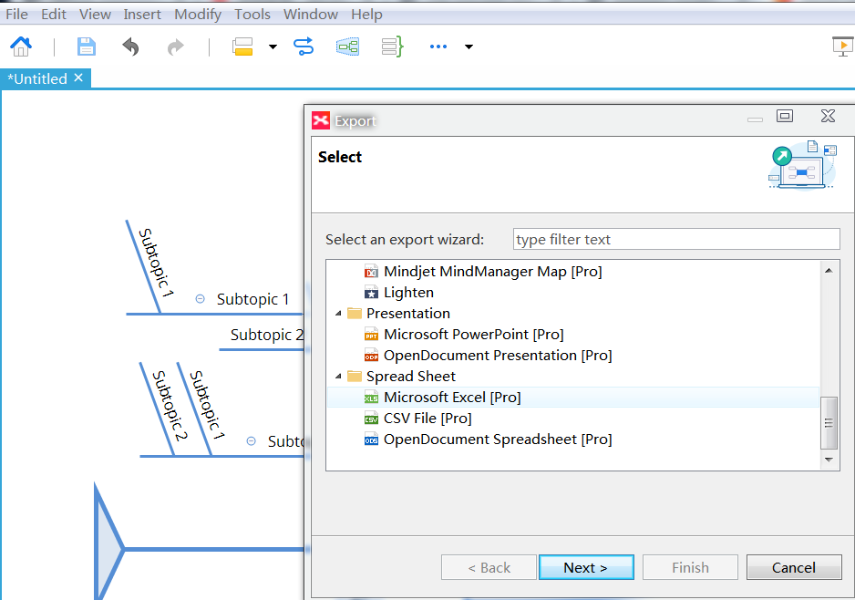
select microsoft exel
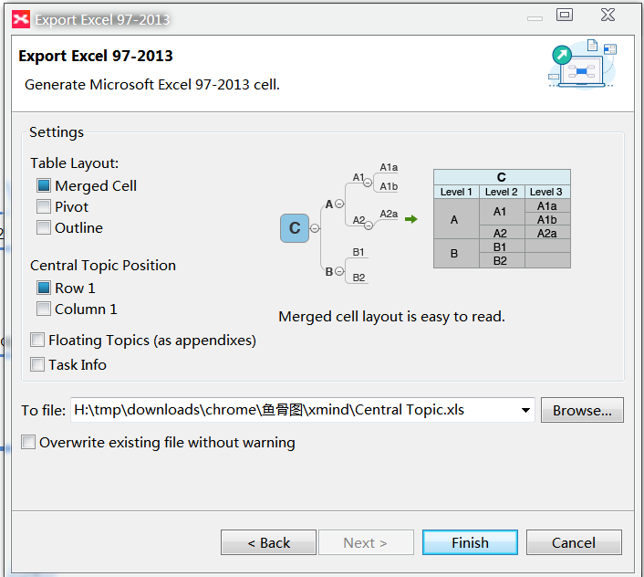
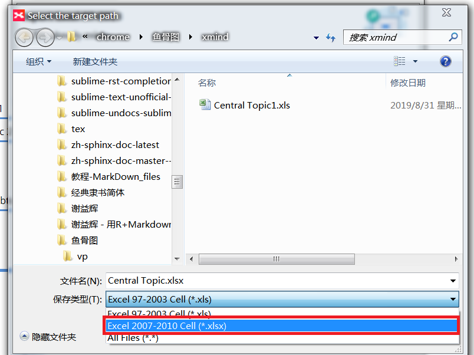
open export excel file
as following:
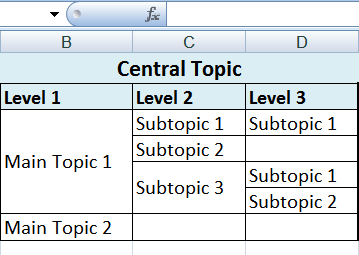
edit excel file by adding priority and task owner
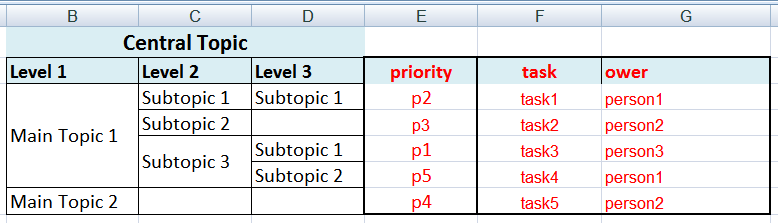
ok, issue tracking table is there.
toolkit intro: visual-paradigm¶
where to get?¶
here to download visual-paradigm
standard version
No risk. No obligation. No registration. 30-day FREE Trial.
Community Edition
all is free just for personal. but when export file or picture, there is watermark on there.
how to install?¶
after download please do as following diagram illustration:
see follwing
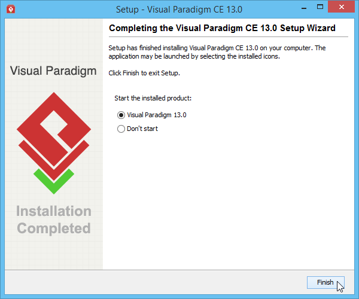
see follwing
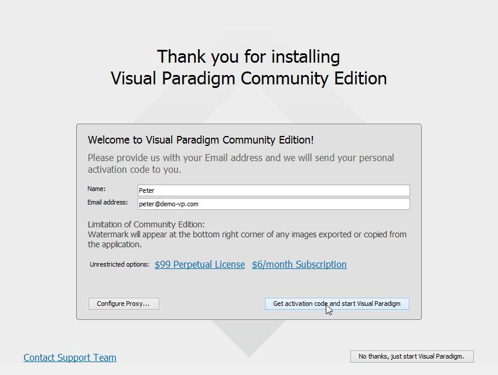
see follwing
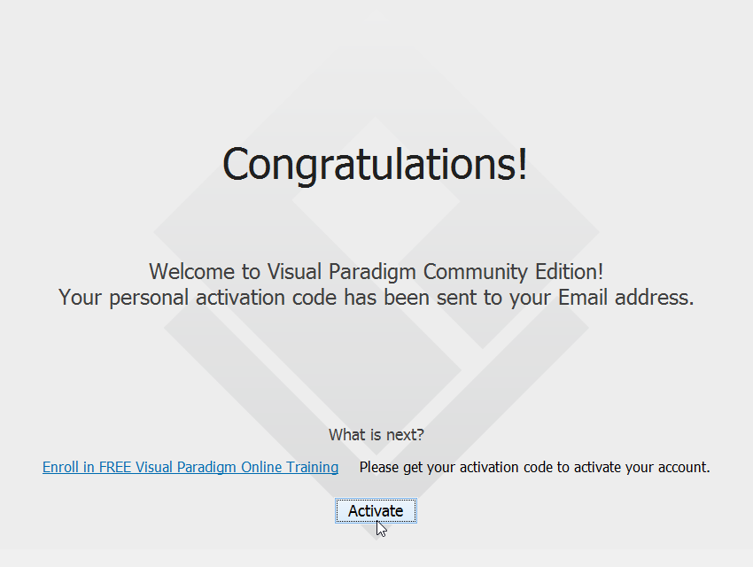
see follwing
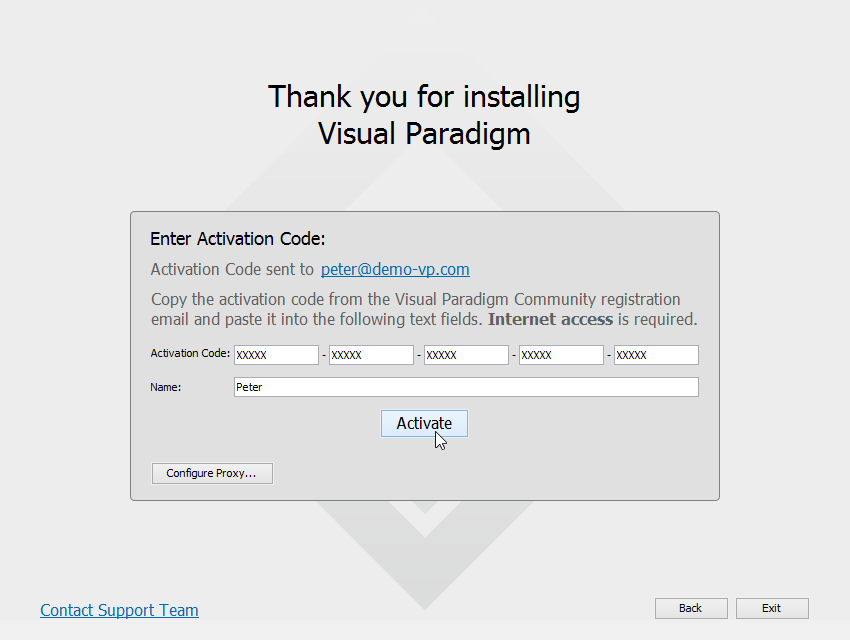
see follwing
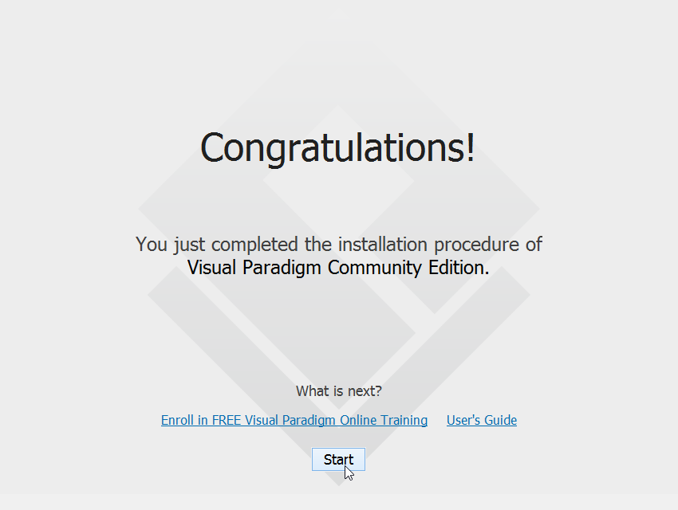